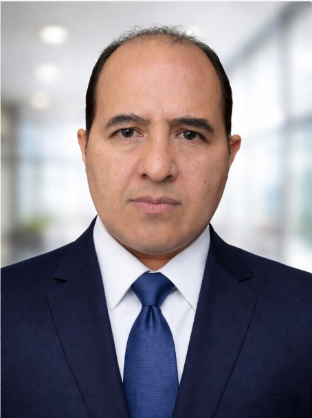

Ejecutivo de Infraestructura y Operaciones TI con más de 20 años de experiencia en entornos empresariales y financieros. Especializado en transformación híbrida y multicloud, optimización presupuestal, liderazgo técnico y modernización de plataformas críticas.
Infrastructure and IT Operations executive with 20+ years of experience across enterprise and financial environments. Specialized in hybrid and multicloud transformation, budget optimization, technical leadership, and modernization of mission-critical platforms.

Puebla, México · Remoto / Híbrido
Puebla, Mexico · Remote / Hybrid
Mi experiencia combina liderazgo técnico, control presupuestal y ejecución de iniciativas de infraestructura que fortalecen la continuidad operativa y habilitan crecimiento empresarial.
My experience combines technical leadership, budget ownership, and execution of infrastructure initiatives that strengthen operational continuity and enable business growth.
Definición y evolución de plataformas on-premise, híbridas y multicloud alineadas al negocio.
Design and evolution of on-premise, hybrid, and multicloud platforms aligned with business priorities.
Consolidación de recursos, eficiencia de storage y decisiones de arquitectura con impacto financiero medible.
Resource consolidation, storage efficiency, and architecture decisions with measurable financial impact.
Disaster Recovery, backup, seguridad y operación estable para plataformas críticas en entorno regulado.
Disaster Recovery, backup, security, and stable operations for critical platforms in regulated environments.
Coordinación de equipos especializados, proveedores estratégicos y soporte multinacional.
Leadership of specialized teams, strategic vendors, and multinational support operations.
Mi trayectoria incluye iniciativas con impacto visible en velocidad de implementación, ahorro operativo, continuidad y evolución tecnológica.
My track record includes initiatives with visible impact on implementation speed, operating savings, business continuity, and technology evolution.
“Apoya Provident su crecimiento en México con el cambio a la nube VMware”.
“Provident supports its growth in Mexico by moving to VMware cloud.”
El caso de éxito destaca la transición estratégica a VMware Cloud on AWS para acelerar tiempos de implementación, reducir riesgo de migración y disminuir costos operativos.
The success story highlights a strategic move to VMware Cloud on AWS to accelerate implementation timelines, reduce migration risk, and lower operating costs.
En Provident lideré migraciones on-premise a VMware Cloud on AWS, VMC a VMC y evolución hacia AWS nativo para más de 350 servidores, además de iniciativas de Disaster Recovery, backup, seguridad y optimización de plataformas productivas.
At Provident, I led on-premise to VMware Cloud on AWS migrations, VMC-to-VMC transitions, and evolution toward native AWS for more than 350 servers, along with Disaster Recovery, backup, security, and production platform optimization initiatives.
También generé un ahorro estimado de MXN $1.2M mensuales mediante optimización de storage y consolidación de hosts, reforzando la eficiencia financiera de la operación.
I also generated an estimated MXN $1.2M in monthly savings through storage optimization and host consolidation, strengthening financial efficiency across the operation.
Recurso adjunto:
Attached resource:
PDF VMware Case StudyExperiencia construida en organizaciones de servicios financieros, operación empresarial e implementación tecnológica.
Experience built across financial services, enterprise operations, and technology implementation environments.
Liderazgo estratégico de infraestructura y operaciones TI, con foco en migraciones críticas, optimización de costos, continuidad operativa y desempeño de plataformas productivas.
Strategic leadership of infrastructure and IT operations, focused on critical migrations, cost optimization, operational continuity, and performance of production platforms.
Implementaciones de infraestructura tecnológica para múltiples clientes con enfoque técnico-comercial.
Technology infrastructure implementations for multiple clients with a technical-commercial approach.
Administración de procesos y políticas de TI, liderazgo de equipos de soporte y gestión de plataformas corporativas.
Administration of IT processes and policies, support team leadership, and management of corporate platforms.
Liderazgo de equipos de hasta 20 personas, implementación de ITIL y supervisión de soporte técnico y seguridad perimetral en 248 sucursales a nivel nacional.
Led teams of up to 20 people, implemented ITIL, and supervised technical support and perimeter security across 248 branches nationwide.
Un perfil preparado para dirigir infraestructura, cloud strategy, eficiencia financiera y modernización operativa.
A profile prepared to lead infrastructure, cloud strategy, financial efficiency, and operational modernization.
Disponible para posiciones ejecutivas o de liderazgo en infraestructura, cloud, operaciones TI y transformación tecnológica.
Available for executive and leadership opportunities in infrastructure, cloud, IT operations, and technology transformation.
Ubicación:Location: Puebla, México
Modalidad:Work model: Remoto / HíbridoRemote / Hybrid
Tel: +52 222 188 8741
Email: jacc42cruz@gmail.com
LinkedIn: linkedin.com/in/jose-abraham-cruz-carmona-73277020
He liderado iniciativas críticas de infraestructura y nube con impacto medible en costo, velocidad de implementación y resiliencia operativa. Busco seguir aportando ese enfoque en organizaciones que valoren la ejecución estratégica, el liderazgo técnico y la transformación tecnológica alineada al negocio.
I have led critical infrastructure and cloud initiatives with measurable impact on cost, implementation speed, and operational resilience. I am looking to continue bringing that approach to organizations that value strategic execution, technical leadership, and business-aligned technology transformation.